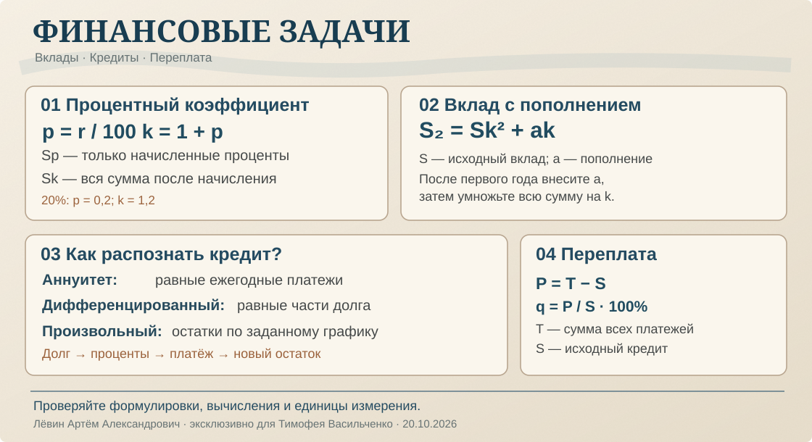

ЕГЭ · профильная математика · 20 октября 2026
Финансовая математика
Вклады с капитализацией, три схемы кредита, переплата и выбор выгодного способа погашения. Главный навык — прочитать финансовое условие как последовательность операций.
Процент и сумма с процентами
Если r — ставка в процентах, p — её десятичная запись, k — повышающий коэффициент, то исходные S рублей превратятся в Sk, а начисленные проценты составят Sp.
Для 100 тыс. рублей под 20% получаем 20 тыс. рублей: 100 · 0,2.
При тех же условиях 120 тыс. рублей: 100 · 1,2. Это значение записывается в столбец «Задолженность».
Деньги работают столько лет, сколько остаются на счёте
При ежегодной капитализации каждое начисление увеличивает всю текущую сумму в k раз. Пополнение, внесённое после первого начисления, участвует только в последующих периодах.
Пример из занятия
В январе 2028 года вложили 950 тыс. рублей, через год добавили 550 тыс. рублей. В январе 2030 года стало 1 807,68 тыс. рублей.
950k² + 550k = 1 807,68
Подстановка k = 1,12 даёт 1 191,68 + 616 = 1 807,68. Следовательно, ставка равна 12% годовых.
Общий случай
Если после каждого года добавляется сумма a, то при n годах:
Снятия со счёта в соответствующих слагаемых отмечаются знаком «минус». При изменяющейся ставке удобнее использовать таблицу.
Распознайте схему до вычислений
Один и тот же заём можно погашать разными способами. Формулировки «равными платежами» и «равными частями основного долга» задают разные графики.
Ежегодный платёж одинаковый. Основной долг внутри платежа уменьшается в разных долях.
X₁ = X₂ = … = XₙОсновной долг убывает каждый год на одну и ту же сумму. Платежи уменьшаются.
Bᵢ = S(1 − i/n)Задана особая последовательность остатков, например каждый год на 20% меньше. Составьте таблицу.
Bᵢ₊₁ = 0,8BᵢФормула аннуитета
Для трёх лет: Sk³ − xk² − xk − x = 0. Здесь x — каждый равный ежегодный платёж.
Общая сумма выплат
Платёж каждого года: S/n + p · (остаток основного долга перед начислением). Ставка фиксирована, платежи в конце года.
Таблица отделяет проценты от платежа
Пример: 1,4 млн рублей на четыре года под 20% годовых. После первых трёх платежей остаток составляет 80% долга до начисления процентов; в четвёртый год кредит закрывают полностью.
Кредит 1,4 млн руб. · 20%
Все суммы в миллионах рублей
| Год | Долг | После процентов | Платёж | Остаток |
|---|---|---|---|---|
| 2030 | 1,4 | 1,68 | 0,56 | 1,12 |
| 2031 | 1,12 | 1,344 | 0,448 | 0,896 |
| 2032 | 0,896 | 1,0752 | 0,3584 | 0,7168 |
| 2033 | 0,7168 | 0,86016 | 0,86016 | 0 |
Порядок действий в любой кредитной задаче
- Начальный долг
Установите остаток до процентов.
- Начисление
Умножьте текущий остаток на k.
- Платёж
Вычтите заданный новый остаток.
- Повторение
Новый остаток перенесите на следующий год.
Что значит «выгоднее»
Если сравниваются одинаковые сумма кредита, ставка и срок, в задачах занятия выгодность определяется общей суммой выплат. Переплата — разность между всеми платежами и первоначальным кредитом.
Платежи по произвольному графику
При ежемесячной ставке 5% и остатках 100, 90, 80, 70, 60, 50, 0% от S платежи равны 15; 14,5; 14; 13,5; 13; 52,5%. Всего 122,5% от кредита.
Переплата = 22,5%
Сравнение схем
100 тыс. рублей, ставка 20%, срок 3 года: дифференцированная схема — 140 000 руб., аннуитетная — около 142 420 руб..
Разница ≈ 2 420 руб.
Это сравнение относится к заданным условиям ежегодных платежей без дополнительных комиссий.
Самостоятельная тренировка
Десять заданий по возрастанию сложности. После решения проверьте ответ и ход рассуждений по пособию.
- Вклад 80 тыс. под 25%: найдите p, k и сумму через год.
- Вклад 200 тыс. под 10% на два года без пополнений.
- 300 тыс. под 10% на два года: через год добавили 50 тыс.
- 500 тыс. на два года, через год добавили 200 тыс.; итог 825 тыс. Найдите ставку.
- Дифференцированный кредит 300 тыс. на 3 года под 10%: платёж второго года и сумма всех выплат.
- Дифференцированный кредит 400 тыс. на 3 года: всего выплатили 480 тыс. Найдите ставку.
- Аннуитетный кредит 210 тыс. на 2 года под 10%: найдите платёж и общую сумму.
- Кредит 500 тыс. на 2 года под 20%: после первого платежа осталось 60% исходного долга. Найдите платежи и переплату.
- Трёхмесячный кредит под 10% в месяц: остатки 100%, 80%, 30%, 0%. Найдите платежи в долях S и переплату.
- 331 тыс. под 10% на 3 года: сравните аннуитетную и дифференцированную схемы.
Открыть ответы для самопроверки
1. p = 0,25; k = 1,25; 100 тыс.
2. 242 тыс. руб.
3. 418 тыс. руб.
4. 10%.
5. 120 тыс.; всего 360 тыс.
6. 10%.
7. 121 тыс.; всего 242 тыс.
8. 300 тыс., 360 тыс.; переплата 160 тыс.
9. 30%, 58%, 33%; переплата 21%.
10. Аннуитет 399 300; дифференцированная 397 200. Разница 2 100 руб.
Чек-лист после решения
Отмечено 0 из 6.

